Gestão de
prazos
Planejamos e acompanhamos o cronograma da obra, monitorando o avanço das atividades e identificando
possíveis desvios. Dessa forma, conseguimos atuar de maneira antecipada para buscar o cumprimento dos
prazos estabelecidos.
Gestão de
custos
Acompanhamos o orçamento, as contratações, as medições e o consumo de recursos ao longo da execução. Nosso
objetivo é manter os custos alinhados ao planejamento, reduzindo desperdícios e permitindo decisões mais
assertivas.

Gestão de
segurança
A segurança é parte fundamental da gestão. Acompanhamos as condições do canteiro e a execução dos
serviços, buscando garantir que as atividades sejam realizadas de forma responsável e de acordo com os
procedimentos e requisitos aplicáveis.

Gestão da
qualidade
Monitoramos a execução dos serviços em cada etapa, verificando sua conformidade com os projetos,
especificações e padrões definidos. Assim, buscamos assegurar que o resultado final esteja alinhado ao que
foi planejado.